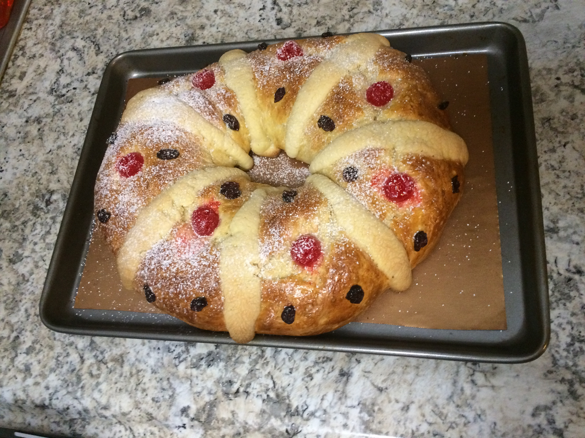

Ingredients
- 1 envelope active dry yeast
- 1/4 cup warm water, (105°F to 115°F)
- 1/3 cup plus 1 tablespoon granulated sugar, divided
- 1/3 cup warm milk, (105°F to 115°F)
- 1 cup (2 sticks) butter, softened, divided
- 4 1/2 cups flour, divided
- 5 eggs, at room temperature, divided
- 1 1/4 teaspoons McCormick® Ground Cinnamon, divided
- 1/2 teaspoon salt
- 4 teaspoons McCormick® Pure Orange Extract
- 1/2 cup confectioners' sugar
- 1 egg yolk
- Candied dried fruit, such as cherries, figs, oranges, lemons, mango or pineapple
- Sliced almonds
Steps
- Sprinkle yeast over warm water in small bowl. Stir in 1 tablespoon of the granulated sugar. Let stand 5 to 10 minutes or until foamy. Add 3/4 cup (1 1/2 sticks) of the butter to warm milk in medium bowl; stir until melted. Set aside.
- Meanwhile, mix 2 cups of the flour, remaining 1/3 cup granulated sugar, 4 of the eggs, 1 teaspoon of the cinnamon and salt in large mixer bowl with dough hook attachment 1 minute on low speed or until well blended. Add yeast mixture, milk and butter mixture, and orange extract; beat 2 minutes. Gradually add 2 cups of the remaining flour, beating for 2 minutes. (Dough should be soft and slightly sticky.) Turn out dough onto lightly floured surface. Knead about 5 minutes or until smooth and elastic. (Dough should not feel dry but soft and slightly tacky.)
- Place dough in buttered or oiled bowl. Roll dough in bowl and turn greased side up. Cover bowl with buttered or oiled plastic wrap. Place bowl in warm, draft -free place, such as inside of microwave oven or turned off oven. Let dough stand 1 to 2 hours or until almost doubled in size.
- Meanwhile, beat remaining 1/4 cup (1/2 stick) butter and confectioners' sugar in medium bowl with electric mixer on medium speed until blended. Add remaining 1/2 cup flour, remaining 1/4 teaspoon cinnamon and egg yolk; beat to form a smooth paste. Divide in 6 equal pieces. Wrap with plastic wrap. Set aside.
- When the dough has almost doubled in size, punch down to remove air. With floured hands, remove from bowl onto floured surface. Knead a few times then shape into a ball. Roll dough into a 40–inch long by 2-inch wide log. Place on large parchment-lined baking sheet. Bring ends of dough together to form a large oval ring. With wet hands, press to seal ends. Cover with clean kitchen towel. Place baking sheet in slightly warm, draft-free place. Let dough stand 1 to 2 hours longer or until almost doubled in size.